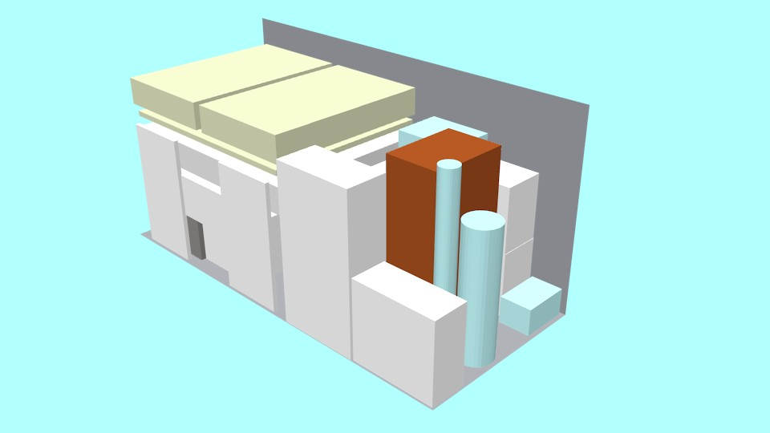

2019-12-22 Weekend Learnings
Contents
I understood how to use Go composition to extend the functionality similar to inheritance in OOP. I’ve used it before but now I can say that I understand it. Also, I’ve done a 3D model of the van that I’m going to use for the moving in January. Just to know if I can fit everything inside.
Go composition
I’m a few years late. This guy is explaining a similar problem to the one that I was trying to solve in his post “struct composition with go”.
The problem I was facing this week was how to record a web request body using a middleware. In my case, it was for debugging purposes but this technique can be used in similar scenarios. The structure http.Request contains a lot of fields, but we are only interested now in the Request.Body which is an io.ReadCloser
|
|
After Googling a little bit, I found that the package io provides a structure called io.TeeReader. This is the functionality that I’m looking for. Given a Reader and a Writer, It writes everything that is read to the writer. It’s like the tee terminal tool.
|
|
So with this, we can simply wrap the request body with a TeeReader and write it to a buffer to be used later.
|
|
But this does not compile… The problem is that the return value of io.TeeReader is an io.Reader and the request.Body must be a io.ReadCloser. Thinking fast, we need an io.TeeReadCloser, but it doesn’t exist.
Don’t panic, we can implement it. we just need to copy/paste the io.teeReader and add the close method.
|
|
Wonderful, but this is not what I want to show you. It would be great if we could “inherit” from the TeeReader and include the Close functionality. This is how the code looks like.
|
|
With this approach, we avoid code duplication as the functionality of TeeReader is still implemented by the io.TeeReader. Our teeReadCloser is a composition of two interfaces io.Reader and io.Closer. The io.Reader is implemented by the io.TeeReader with the original io.ReadCloser and the output io.Writer. Then, The io.Closer is implemented by the io.ReadCloser passed to the constructor. This effectively redirects the teeReadCloser.Read calls to the io.TeeReader and the teeReadCloser.Close directly to the io.ReadCloser.
Another example related to this one is how to extend the implementation of http.ResponseWriter to record the response code. Again, with logging purposes. This is really simple.
|
|
This allows us to override the ResponseWriter.WriteHeader method with our new one that just stores the StatusCode and calls the underlying method. The other two methods of the interface http.ResponseWriter are not modified. I find this approach really clean, easy to extend and easy to modify. The following is an example of how to use this implementation with a middleware.
|
|
Moving van cargo model
So here it is. All my furniture inside a moving van. I’m doing this model with furniture slightly bigger than what it actually is and leaving space between objects. The conclusion is that I think I will be able to fit everything inside a big van, so I don’t need a small truck.
Random color code:
- Blue things are fragile. Fridge, Microwave and decoration.
- Brown is something I will provably disassemble
- Yellow things are the box spring.
- Black is the sofa.

I didn’t put any box in this model, I hope to be able to put all the boxes in my car. In the worst case, there is still some room in the van for boxes. Let’s see…
The model is generated with Blender.